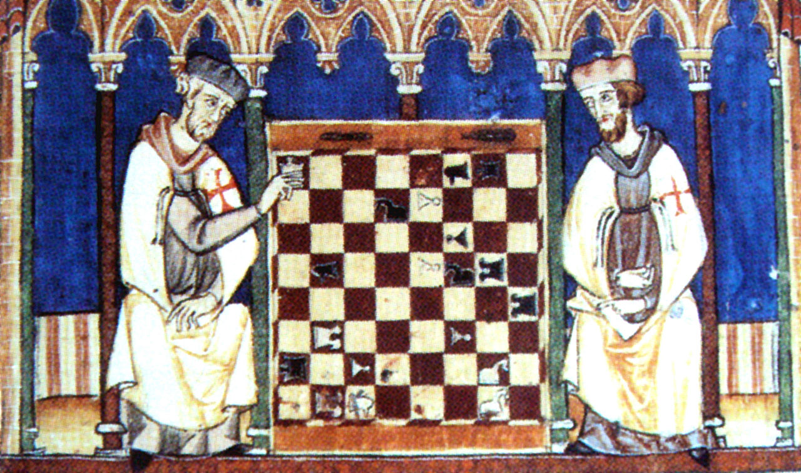

What is chess?
The Western board game
Chess is a recreational and competitive board game played between two players. It is sometimes called Western or international chess to distinguish it from related games such as xiangqi. The current form of the game emerged in Southern Europe during the second half of the 15th century after evolving from similar, much older games of Indian and Persian origin. Today, chess is one of the world's most popular games, played by millions of people worldwide at home, in clubs, online, by correspondence, and in tournaments.

An abstract strategy game
Chess is an abstract strategy game and involves no hidden information. It is played on a square chessboard with 64 squares arranged in an eight-by-eight grid. At the start, each player (one controlling the white pieces, the other controlling the black pieces) controls sixteen pieces: one king, one queen, two rooks, two knights, two bishops, and eight pawns. The object of the game is to checkmate the opponent's king, whereby the king is under immediate attack (in "check") and there is no way to remove it from attack on the next move. There are also several ways a game can end in a draw.
History
Predecessors
Chess is believed to have originated in northwest India, by about the early 7th century. Its early form was known as chaturanga , literally four divisions [of the military] – infantry, cavalry, elephants, and chariotry, represented by the pieces that would evolve into the modern pawn, knight, bishop, and rook, respectively. Chaturanga was played on an 8×8 uncheckered board, called ashtapada. Thence it spread eastward and westward along the Silk Road. The earliest evidence of chess is found in the nearby Sasanian Persia around 600, where the game came to be known by the name chatrang.
The Romantic Era in chess
In the 18th century, the center of European chess life moved from the Southern European countries to France. The two most important French masters were Francois-Andre Danican Philidor, a musician by profession, who discovered the importance of pawns for chess strategy, and later Louis-Charles Mahe de La Bourdonnais, who won a famous series of matches with the Irish master Alexander McDonnell in 1834.Centers of chess activity in this period were coffee houses in major European cities like Cafe de la Regence in Paris and Simpson's Divan in London.
Birth of a sport
Prague-born Wilhelm Steinitz laid foundations for the scientific approach to the game, the art to break a position down into its components and prepare correct plans. In addition to his theoretical achievements, Steinitz founded an important tradition: his triumph over the leading German master Johannes Zukertort in 1886 is regarded as the first official World Chess Championship. Steinitz lost his crown in 1894 to a much younger player, the German mathematician Emanuel Lasker, who maintained this title for 27 years, the longest tenure of any world champion.
